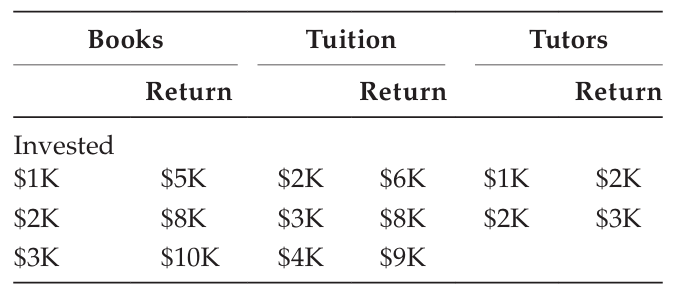
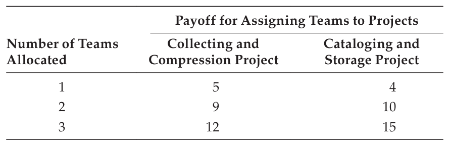

EXERCISES#
3.1 Find the maximum flow through the networks shown in Figure 3.24. Identify the edges in the minimum cut set. In each case, assume node 0 is the source, and the highest-numbered node is the sink. Arc capacities are shown in boxes. 3.2 A data communications network can be described by the diagram in Figure 3.25. Every data link from node \(i\) to node \(j\) has a capacity which is denoted as a label on the data link in the diagram. Non-existent links have zero capacity. Data is being generated at node 1 and is to be routed through the network (not necessarily passing through all other nodes) to node 6 where the data will be used. The amount of data generated at node 1 is exactly the amount of data consumed at node 6 . No data is generated or used at intermediate nodes, so all data that enters an intermediate node must leave it, and vice versa.

FIGURE 3.24
(a,b) Maximum flow in networks.

FIGURE 3.25
Communications network.
-
a. What is the maximum feasible amount of data that can flow through this network?
b. What is the flow on each of the data links in order to achieve this maximum?
c. Which links comprise the bottleneck in this network?
d. What is the complexity of the Ford-Fulkerson algorithm for maximum network flow?
3.3 Formulate and solve the following distribution problem to minimize transportation costs, subject to supply and demand constraints. Two electronic component fabrication plants, A and B , build radon-cloud memory shuttles that are to be distributed and used by three computer system development companies. Following are the various costs of shipping a memory shuttle from fabrication plants to the system development sites, the supply available from each fabrication plant, and the demand at each system development site. Fabrication plant A is capable of creating a supply of 160 shuttles; and the cost to ship to site 1,2 , and 3 is \(\$ 1000, \$ 4000\), and \(\$ 2500\), respectively. Fabrication plant \(B\) can produce 200 shuttles, and the shipping costs are \(\$ 3500, \$ 2000\), and \(\$ 4500\) to the three sites. The demand at site 1 is 150 , at site 2 is 120 , and at site 3 is 90 memory shuttles.
-
a. Identify the decision variables, write the objective function, and give the constraints associated with this problem.
b. Solve this distribution problem.
3.4 Suppose that the countries of Agland, Bugland, and Chemland produce all the wheat, barley, and oats in the world. The world demand for wheat requires 125 million acres of land devoted to wheat production. Similarly, 60 million acres of land are required for barley, and 75 million acres of land are needed for oats. The total amount of land available for these purposes in Agland, Bugland, and Chemland is 70 million, 110 million, and 80 million acres of land, respectively. The number of hours of labor needed in the three countries to produce an acre of wheat is 18 hours, 13 hours, and 16 hours, respectively. The number of hours of labor needed to produce an acre of barley is 19 hours, 15 hours, and 10 hours in the three countries, respectively. And the labor requirements for an acre of oats are 12 hours, 10 hours, and 16 hours in the three countries, respectively. The hourly labor cost to produce wheat is \(\$ 6.75\) in each of the countries. The labor cost per hour in producing barley is \(\$ 4.10, \$ 6.25\), and \(\$ 8.50\) in the three countries. To produce oats, the labor cost per hour is \(\$ 8.25\) in each country. The problem is to allocate land use in each country so as to meet the world food requirements and minimize the total labor cost. Formulate this problem as a transportation model, letting decision variable \(\mathrm{x}_{\mathrm{ij}}\) denote the number of acres of land allocated in country i for crop j.
3.5 Four workers are to be assigned to machines on the basis of the worker’s relative skill levels on the various machines. Five machines are available, so one machine will have no worker assigned to it. In order to maximize profitability, we wish to minimize the total cost of the assignment. Use the cost matrix given in the following, and the Hungarian assignment algorithm, to determine the optimal assignment of workers to machines, and give the cost of the optimal assignment.
Machines |
|||||
|---|---|---|---|---|---|
Workers |
\(\mathbf{1}\) |
\(\mathbf{2}\) |
\(\mathbf{3}\) |
\(\mathbf{4}\) |
\(\mathbf{5}\) |
1 |
10 |
9 |
8 |
12 |
7 |
2 |
3 |
4 |
5 |
14 |
6 |
3 |
2 |
1 |
1 |
10 |
2 |
4 |
4 |
3 |
5 |
12 |
6 |
3.6 Four federally funded research projects are to be assigned to four existing research labs, with one project being allotted to each lab. The costs of each possible placement are given in the following table. Use the Hungarian method to determine the most economical allocation of projects.
Project |
Sandy Lab |
Furrmy Lab |
Xenonne Lab |
Liverly Lab |
|---|---|---|---|---|
Cryogenic cache memory |
12 |
15 |
10 |
14 |
Spotted owl habitat |
8 |
10 |
6 |
9 |
Pentium oxide depletion |
20 |
22 |
18 |
12 |
Galactic genome mapping |
10 |
12 |
8 |
16 |
3.7 To solve a maximization assignment problem, first convert it to a minimization problem by multiplying each element in the cost matrix by -1 , then adding sufficiently large constants to rows and column so that no element is negative. Then apply the Hungarian method to the new problem. Suppose the following matrix elements represent the value or productivity of associating certain workers with machines. Solve this assignment problem to maximize the productivity.
Machines |
||||
|---|---|---|---|---|
Workers |
\(\mathbf{1}\) |
\(\mathbf{2}\) |
\(\mathbf{3}\) |
\(\mathbf{4}\) |
1 |
6 |
7 |
6 |
7 |
2 |
4 |
3 |
8 |
8 |
3 |
5 |
8 |
9 |
8 |
4 |
9 |
5 |
4 |
3 |
3.8 The following matrix contains the hazard insurance premiums that a company must pay in order for employee \(i\) to operate machine \(j\). It is assumed that a low insurance premium implies that a worker can safely and proficiently operate a machine. Determine an assignment of workers to machines that will be the safest (least hazardous).
What is the total insurance premium corresponding to the optimal assignment?
3.9 Prospective employees are to be assigned to jobs by the following mechanism: Each employee ranks his job preferences (rank 1 means highest preferences) and
this information is contained in an array P where \(\mathrm{p}_{\mathrm{ij}}\) denotes employee i’s ranking of job j. Similarly, each prospective employer ranks his preferences of employees, and matrix R is such that \(\mathrm{r}_{\mathrm{ij}}\) denotes employer i ‘s ranking of employee j . Formulate this problem to determine an assignment of \(n\) jobs to \(n\) employees that optimizes the mutual satisfaction of employers and employees. (Assume that each employer corresponds to a different job.)
3.10 A group of m people, where \(\mathrm{m} \leq 40\), is to be organized into teams of at most four people. Each team is associated with a workstation, of which ten are available. People may not express preferences for teammates; however, each ranks his workstation preference, and these preferences appear in a \(40 \times 10\) matrix P where \(\mathrm{p}_{\mathrm{ij}}\) denotes the preference of person i for workstation j (low numbers in P indicate high preference). This is a variation of the classical assignment model. Formulate this problem to optimize the association of people to workstations.
3.11 Use Kruskal’s algorithm to find the minimum cost spanning tree for the undirected graph in Figure 3.26. Identify the arcs in the tree, and state the cost of the minimum spanning tree.
3.12 Use Prim’s algorithm to find the minimum cost spanning tree for the graph in Figure 3.26. Identify the arcs that comprise the minimum spanning tree, and state the cost of the minimum spanning tree for this graph.
3.13 Consider a graph in which the four nodes are located at the corners of a unit square, and the shortest possible arcs connect all pairs of nodes.
-
a. Find the minimal spanning tree of this graph.
b. Construct the Steiner tree obtained by placing a junction point in the center of the square. Is this an optimal Steiner tree?
c. Determine the total length of the connections in this Steiner tree, and compare it with the length of the connections in the minimum spanning tree.

FIGURE 3.26
Minimum spanning tree.
3.14 How many different spanning trees are there in a fully connected undirected graph of five nodes?
3.15 How many arcs are there in a spanning tree of a fully connected undirected graph with 1000 nodes?
3.16 Use the backward labeling algorithm to find the shortest path from node 1 to node 9 in the graph in Figure 3.27. The labels shown on the arcs denote costs or distances between nodes.
-
a. What are the arcs in the shortest path through this network?
b. What is the length (cost) of the shortest path?
3.17 Following is the connectivity matrix of a graph. Use the shortest path labeling algorithm to find the shortest route from node 1 to node 6 . The symbol \(\infty\) denotes the absence of a path.
3.18 Formulate the general problem of finding the minimum cost (shortest) path from node 1 to node n in a directed acyclic network of n nodes, where the distance from

FIGURE 3.27
Shortest path.
node i to node j is denoted \(\mathrm{d}_{\mathrm{ij}}\). Hint: Let the decision variables be restricted to have only the values zero or one, with the following interpretation:
Give the objective function and the constraints, in terms of these decision variables. 3.19 Six thousand dollars is to be applied to a student’s educational expenses in the following way:
-
Between \$1000 and \$3000 for books
Between \$2000 and \$4000 for tuition
Between \$1000 and \$2000 for tutors
The allocation is to be made in whole thousands of dollars. An analyst has quantified the anticipated payoffs (perhaps in terms of increased future earnings) as:

Use dynamic programming to determine the optimal allocation of the \(\$ 6000\). Show the tables you build as you solve this problem. 3.20 A student must select ten elective courses out of four different departments. From each department, at least one and no more than three courses must be chosen. The selection is to be made in such a way as to maximize the combined general knowledge from the four fields. The following chart indicates the knowledge acquired as a function of the number of courses taken from each field. Solve this as a dynamic programming problem. Show each of your tables in this staged decision-making process.
Number of courses taken |
|||
|---|---|---|---|
\(\mathbf{1}\) |
\(\mathbf{2}\) |
\(\mathbf{3}\) |
|
Anthropology |
25 |
50 |
60 |
Art |
20 |
30 |
40 |
Economics |
20 |
40 |
50 |
Physics |
50 |
60 |
60 |
3.21 A space telescope being launched aboard a space shuttle is to be deployed and immediately will be transmitting data to earth-bound data processors at a prodigious rate. Suppose there are four teams of technical experts that can be allocated among two projects: one aimed at collecting and compressing data, and another whose responsibility is to catalog and store data. Because this data is extremely valuable and virtually irreplaceable, it is essential that you allocate the teams optimally to the two projects. Each of the two projects must have at least one team assigned to it. Use a dynamic programming table-oriented method to allocate the four teams. The following information is available:

3.22 A small project consists of ten jobs whose durations in days are shown on the arcs in the activity diagram in Figure 3.28:
-
a. Calculate early and late occurrence times for each event.
b. What is the minimal project duration?
c. Which activities are critical?
3.23 Suppose that for the aforementioned project, we have the following crash times and costs:
Task (i, j) |
Minimum (Crash) Duration |
Crash Cost ($/day) |
|---|---|---|
\((1,2)\) |
2 |
20 |
\((2,3)\) |
3 |
15 |
\((2,4)\) |
5 |
25 |
\((3,5)\) |
2 |
20 |
\((3,6)\) |
1 |
- |
\((4,6)\) |
3 |
20 |
\((4,7)\) |
2 |
- |
\((5,8)\) |
5 |
15 |
\((6,8)\) |
5 |
15 |
\((7,8)\) |
3 |
20 |

FIGURE 3.28
Activity diagram.
-
a. What is the minimum (crashed) project duration?
b. Determine the minimum crashing costs of schedules ranging from normal length down to the minimal length.
c. If overhead costs amount to $\$ 75$ per day, what is the optimal schedule length with respect to both crashing and overhead costs? Indicate the scheduled duration of each activity in this optimal schedule.